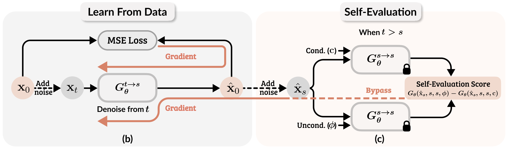
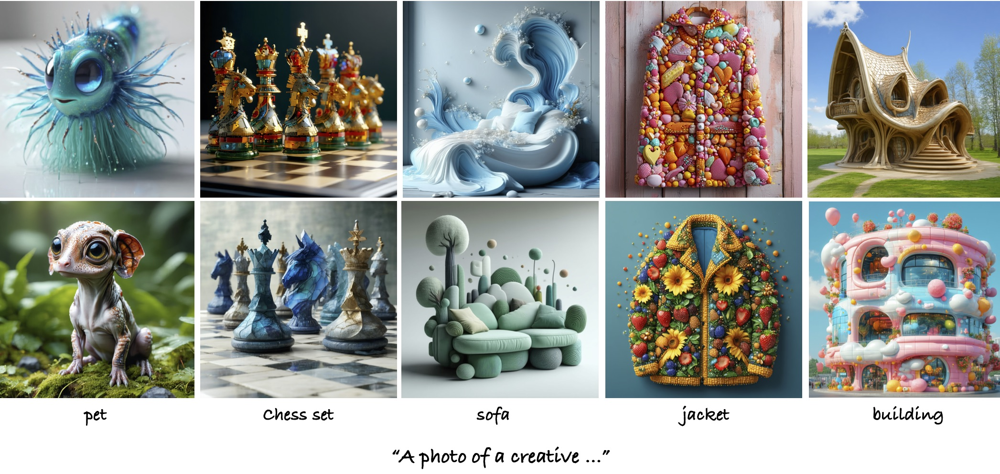
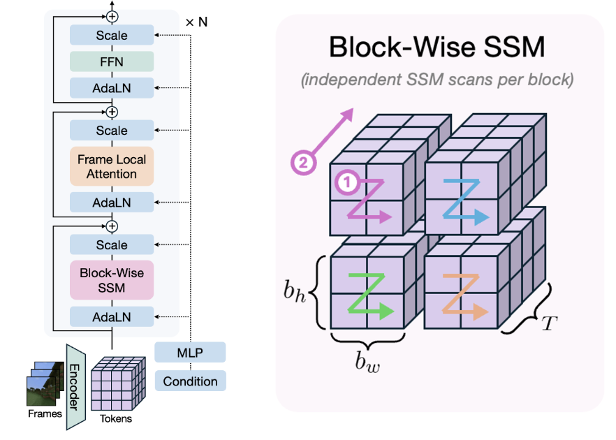
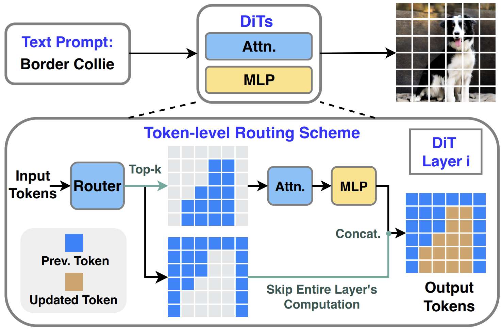

Yotam Nitzan
I am a Research Scientist at Adobe in San Francisco.
Previously, I earned my Ph.D. in Computer Science from Tel Aviv University, where I was advised by Prof. Daniel Cohen-Or . I've interned at Google Research and Adobe Research (x2).
Before that, I received an M.Sc. in Computer Science from Tel Aviv University
and a B.Sc. in Applied Mathematics from Bar-Ilan University.
I'm focused on visual generative models, aiming to make them more interactive, intuitive, and controllable.
Email /
GitHub /
Google Scholar
/
Twitter

Self-Evaluation Unlocks Any-Step Text-to-Image Generation
Xin Yu ,
Xiaojuan Qi ,
Zhengqi Li ,
Kai Zhang ,
Richard Zhang ,
Zhe Lin ,
Eli Shechtman ,
Tianyu Wang ,
Yotam Nitzan
arXiv , 2025
project page /
arXiv
Learning an Image Editing Model without Image Editing Pairs
Nupur Kumari ,
Sheng-Yu Wang ,
Nanxuan Zhao ,
Yotam Nitzan ,
Yuheng Li ,
Krishna Kumar Singh ,
Richard Zhang ,
Eli Shechtman ,
Jun-Yan Zhu ,
Xun Huang
arXiv , 2025
project page /
arXiv

VLM-Guided Adaptive Negative Prompting for Creative Generation
Shelly Golan ,
Yotam Nitzan ,
Zongze Wu ,
Or Patashnik
arXiv , 2025
project page /
arXiv

Long-Context State-Space Video World Models
Ryan Po ,
Yotam Nitzan ,
Richard Zhang ,
Berlin Chen ,
Tri Dao ,
Eli Shechtman ,
Gordon Wetzstein ,
Xun Huang
ICCV , 2025
project page /
arXiv

Layer-and Timestep-Adaptive Differentiable Token Compression Ratios for Efficient Diffusion Transformers
Haoran You ,
Connelly Barnes ,
Yuqian Zhou ,
Yan Kang ,
Zhenbang Du ,
Wei Zhou ,
Lingzhi Zhang ,
Yotam Nitzan ,
Xiaoyang Liu ,
Zhe Lin ,
Eli Shechtman ,
Sohrab Amirghodsi ,
Yingyan (Celine) Lin
CVPR , 2025
project page /
arXiv
Lazy Diffusion Transformer for Interactive Image Editing
Yotam Nitzan ,
Zongze Wu ,
Richard Zhang ,
Eli Shechtman ,
Daniel Cohen-Or ,
Taesung Park ,
Michaël Gharbi
ECCV , 2024
project page /
arXiv
Domain Expansion of Image Generators
Yotam Nitzan ,
Michaël Gharbi ,
Richard Zhang ,
Taesung Park ,
Jun-Yan Zhu ,
Daniel Cohen-Or ,
Eli Shechtman
CVPR , 2023
project page /
arXiv /
code
State-of-the-Art in the Architecture, Methods and Applications of StyleGAN
Amit H Bermano ,
Rinon Gal ,
Yuval Alaluf ,
Ron Mokady ,
Yotam Nitzan ,
Omer Tov ,
Or Patashnik ,
Daniel Cohen-Or
Eurographics , 2022 (STARs)
arXiv
MyStyle: A Personalized Generative Prior
Yotam Nitzan ,
Kfir Aberman ,
Qiurui He ,
Orly Liba ,
Michal Yarom ,
Yossi Gandelsman ,
Inbar Mosseri ,
Yael Pritch ,
Daniel Cohen-Or
SIGGRAPH Asia , 2022 (Journal Track)
project page /
arXiv /
video /
code
StyleAlign: Analysis and Applications of Aligned StyleGAN Models
Zongze Wu ,
Yotam Nitzan ,
Eli Shechtman ,
Dani Lischinski
ICLR , 2022 (Oral)
arXiv /
video /
code
LARGE: Latent-Based Regression through GAN Semantics
Yotam Nitzan* ,
Rinon Gal* ,
Ofir Brenner ,
Daniel Cohen-Or
CVPR , 2022
arXiv /
code
Designing an Encoder for StyleGAN Image Manipulation
Omer Tov ,
Yuval Alaluf ,
Yotam Nitzan ,
Or Patashnik ,
Daniel Cohen-Or
SIGGRAPH , 2021
arXiv /
code
Encoding in Style: a StyleGAN Encoder for Image-to-Image Translation
Elad Richardson ,
Yuval Alaluf ,
Or Patashnik ,
Yotam Nitzan ,
Yaniv Azar ,
Stav
Shapiro ,
Daniel Cohen-Or
CVPR , 2021
project page /
arXiv /
code
Face Identity Disentanglement via Latent Space Mapping
Yotam Nitzan ,
Amit Bermano ,
Yangyan Li ,
Daniel Cohen-Or
SIGGRAPH Asia , 2020
project page /
arXiv /
code